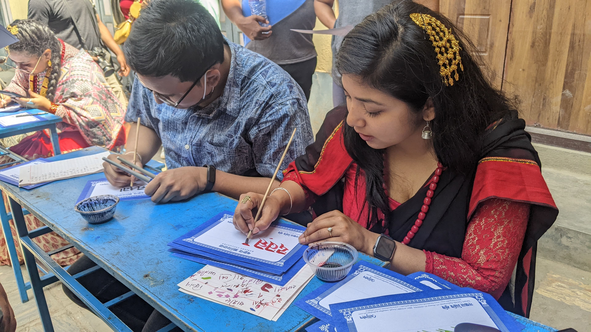

Our Mission & Purpose
Callijatra Foundation is a non-profit cultural and technological initiative dedicated to keeping indigenous scripts like Ranjana Lipi and Nepal Lipi (Newa Script) alive, accessible, and functional in the digital age.
Nepal possesses a millennium-long history of epigraphy, manuscript culture, and aesthetic calligraphy. However, the lack of modern digital infrastructure—such as Unicode support, web-ready fonts, input tools, and educational guides—threatened to isolate these scripts from contemporary usage.
Callijatra bridges this gap between ancient heritage and modern computing through open digital fonts, software widgets, educational video series, and community calligraphy workshops.

What We Do
Our core focus areas in cultural technology and preservation
Digital Typography & Fonts
Designing modern, Unicode-compliant typefaces like Nithya Ranjana and Nepal Lipi fonts optimized for web displays, apps, and print publications.
Open Web Tools & Converters
Building open-source script converters (Devanagari ↔ Nepal Lipi), transliteration keyboards, and JavaScript widgets that make script switching effortless on any website.
Workshops & Education
Conducting hands-on calligraphy training, exhibitions, masterclasses, and producing free educational video tutorials to teach younger generations the art of writing indigenous scripts.
Get Involved
Whether you are a developer looking to integrate Newa scripts into your software, a researcher, or a calligraphy enthusiast, we welcome collaboration and contributions.